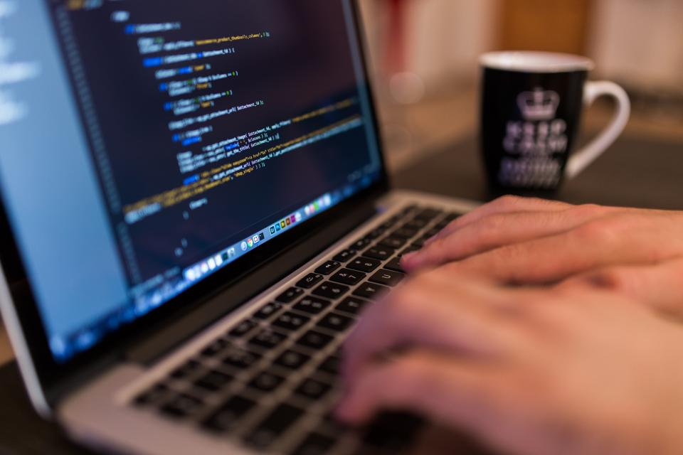
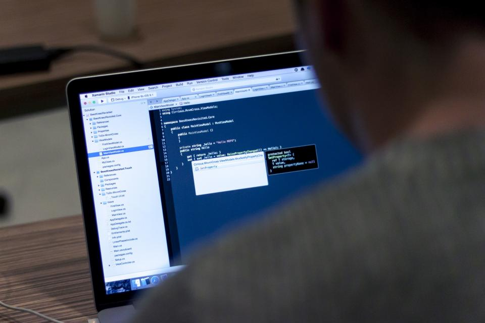
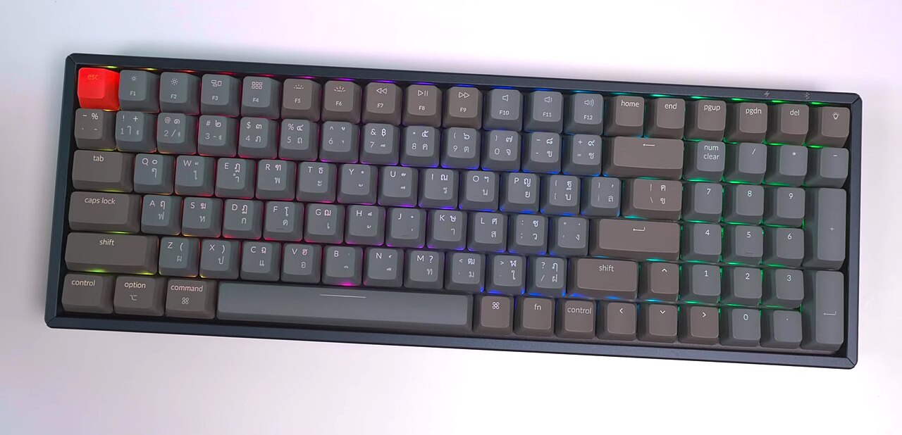

Обо мне
Привет! Я — Ника. Живу во Франции, учусь на четвёртом курсе, а на самом деле живу в редакторе кода. Начала с «сделаю сайт одногруппнице» в пятнадцать лет, и с тех пор остановиться не получается.
Я человек дотошный, любопытный и слегка педантичный — но исключительно по делу. Если вижу кнопку, которая съехала на два пикселя, мне физически нехорошо. Зато при мне код читается, тесты проходят, а релизы не случаются в пятницу вечером.
- Первый сайт собрала в 15 лет — на нём была бегущая строка. Стыдно, но тепло.
- Со второго курса работаю джуном в небольшой студии и уже знаю, что «временное решение» живёт вечно.
- Веду свои pet-проекты и выкладываю их на GitHub — пусть люди видят, как я расту.
- Главное правило: «Сначала заставь работать, потом сделай красиво, потом сделай быстро».
Чем занимаюсь
Делаю веб-приложения от макета до деплоя: рисую интерфейс, пишу API и храню данные так, чтобы потом не было мучительно больно.


Фронтенд
React и TypeScript, адаптивная вёрстка, доступность. Интерфейс должен нормально работать и на телефоне бабушки.
Бэкенд
API на Python (FastAPI) и Node.js, базы на PostgreSQL. Люблю понятные схемы и честные миграции.
Pet-проект: «Привычки»
Трекер привычек с мягкими напоминаниями — без криков и штрафов. Им пользуются человек тридцать, и это уже много.
Telegram-боты
Пишу ботов для знакомых: от расписания пар до учёта общих расходов в общаге.

$ git commit -m "fix: наконец-то починила"
$ npm test && echo "всё зелёное, можно кофе"
Интересные факты
- Выпиваю кофе строго из одной кружки с надписью
404: sleep not found. - Печатаю на механической клавиатуре с синими свитчами. Соседи по общежитию уже смирились.
- Называю переменные нормально. Если встречаю
data2_final_new, у меня дёргается глаз. - Разговариваю с резиновой уточкой на мониторе. Утка уже выслушала половину моих багов и ни разу не перебила.
- Люблю ночные хакатоны и ненавижу ночные хотфиксы. Это разные вещи.
- Верю, что хороший README важнее хитрого алгоритма. Пока другие мечтают об идеальной архитектуре, я пишу документацию.
Как со мной работать: приходите с задачей и контекстом, а не с «ну сделай как-нибудь». Дайте мне чёткое ТЗ, немного самостоятельности и код-ревью без токсичности — и я сдам вовремя, с тестами и с описанием. Только не просите «поправить по-быстрому в проде».